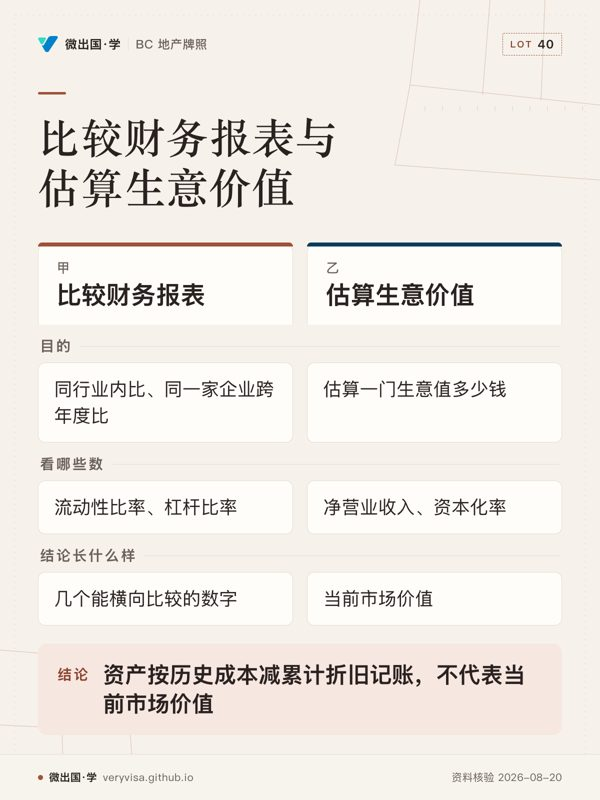

🃏 Flashcards · 3 闪卡 · 3 张 🖼 Slides · 2 幻灯 · 2 页 ✍️ Questions · 9 刷题 · 9 道
估价与财务报表 valuation P2 稳住 P2 Hold steady
ZH EN ZH + EN
先看这一章怎么考 First, how this chapter is tested
场景判断：给出卖生意的不同交易结构（资产打包出售 vs. 买部分股份 vs. 买全部股份），考哪一种属于地产交易、需要持有地产牌照。 Scenario judgment: Given different transaction structures for selling a business (asset sale package vs. purchasing partial shares vs. purchasing 100% of the shares), testing which one constitutes a real estate trade requiring a real estate licence. 组织形式辨析：给出一宗投资或执业场景（如有限合伙人参与日常管理、持牌人设立个人地产公司 PREC、一般合伙人不知情的合伙债务），考谁承担无限责任、谁享有限制责任保护以及如何纳税。 Business organization analysis: Given an investment or practice scenario (such as a limited partner participating in daily management, a licensee establishing a Personal Real Estate Corporation (PREC), or a general partner facing unknown partnership debt), testing who bears unlimited liability, who enjoys limited liability protection, and how profits are taxed. 会计准则配对：描述一笔具体业务（如佣金在解除条件还是过户时入账、全年保费按月分摊、低值文具直接列支、物业按实付价而非评估价入账），考它对应哪一条公认会计准则（GAAP）。 Accounting principles matching: Describing a specific business transaction (such as recognizing commission at subject removal vs. completion, amortizing annual insurance premiums monthly, immediately expensing low-value supplies, or recording real property at purchase price rather than appraised value), testing which Generally Accepted Accounting Principle (GAAP) applies. 最常丢分的陷阱（看到题干信号就警觉） Traps that cost the most marks (watch for the signal in the stem)
股份交易一刀切免牌照 Assuming all share transactions are exempt from licensing 题干出现持有地产的公司（company holding real estate），且出现收购全部股份（100% of the shares）或部分股份（partial shares）的对比。 The question stem mentions a corporation holding real estate and contrasts acquiring 100% of the shares against acquiring partial shares. 公司或有限合伙挡住一切个人责任 Believing a corporation or limited partnership shields all personal liability 题干描写有限合伙人插手日常管理（active management），或持牌人以为成立 PREC 后连提供地产服务的执业过失也由公司兜底。 The question stem describes a limited partner engaging in active management, or a licensee assuming that a PREC shields personal liability for negligence in providing real estate services. 把收现日当成收入或费用确认日 Treating cash receipt or payment dates as revenue or expense recognition dates 题干问佣金何时确认、跨期保险费如何入账、年末未收到的应收租金算不算当年收入，或按揭本金偿还进哪张表。 The question asks when commission is recognized, how prepaid annual insurance is recorded, whether uncollected rent receivable counts as revenue, or where mortgage principal repayments appear. 本章考点页：导图、要点表、7 道带逐项解析的练习 →
本章地位 ：估价与财务报表板块（ch08/ch21–ch23）的开篇，讲的是通用会计原理 ——
三种企业组织形式的法律与税务差异、会计的几条基本假设、资产负债表与损益表怎么互相咬合、
折旧与税务上的资本成本折让（CCA）有什么不同、几个基础财务比率怎么读。
收益法估价（NOI、资本化率）在 ch21–ch23 展开，本篇不涉及 ；本篇的比率分析只谈
流动性与杠杆，不谈物业估值。
核实日期：2026-09-05 ，出处见文末源表。
一、这一章要回答的两个问题 本节回答 This section answers 回答买卖生意的哪类交易结构需要持有地产牌照 Explains which business sale transaction structures require a real estate licence. 本章考题 1 Question 1
持牌人为什么要懂财务报表？考试口径给的答案是第一层 ：你可能会经手一笔连带着营业资产
（存货、设备、租约、商誉）一起卖的生意——比如一家带地产的餐馆、一间带门店的干洗店。
这类交易如果涉及地产，需要牌照；如果卖的是公司股份而不带地产，那是证券交易，不需要地产牌照
（见下文「作为持牌人」框）。要判断这笔生意值不值这个价、卖方说的营收是不是真的，
你至少要能读懂对方给你的资产负债表和损益表，知道它们各自在回答什么问题。
第二层，也是本篇考试口径完全没写的一层 ：你自己挂靠的那家经纪行，本身也是一个会计主体，
而且是一个受法定监管的 会计主体。它每年要按规定编制财务报表、请会计师核阅、报给监管方；
它的信托账户里那些客户的钱，在会计上根本不算它自己的资产。这一层内容 2020 年版考试口径
一个字都没提，但它和第一层用的是同一套会计工具 ——读懂了三张表怎么长出来，
两层你都能应付。
ℹ️
「考试口径是结构，不是真相」在这一章最直接的体现
这一章的核心——复式记账的资产负债表恒等式、权责发生制、几条 GAAP 基本假设——
是几十年没变过的会计原理 ，不会因为哪部法律修订而过时。这一章要多花心思的不是
「考试口径哪句话被推翻了」（这一章几乎没有被推翻的说法），而是考试口径完全没写、
但持牌人执业当天就用得上 的那一层：经纪行自己的法定财务报表义务。
作为持牌人：卖生意要不要牌照
不需要 ：如果这门生意不持有地产资产。需要 ：如果生意按资产打包出售（asset sale），其中含地产成分（出售或出租物业、
转让租约）。需要 ：如果持有地产的是一家公司，且这次交易是买下全部股份 （100%）。不需要 ：如果只买下部分股份——这属于证券交易，可能要按《证券法》(Securities Act)
另外注册，不算地产交易。
节末检索小测 · 先别往回翻，凭记忆作答 Quick recall check: answer from memory before scrolling back
An investor wishes to acquire an operating bakery. In which of the following transaction structures is the representative required to hold a real estate licence?
一名投资者希望收购一家正在营业的烘焙店。在以下哪种交易结构中，代理该交易的代表必须持有地产牌照？
a The investor purchases only the baking ovens, display cases, and trade name, with no lease assignment or real property involved. ✗ 不涉及任何地产资产或租约转让的纯营业设备与商号买卖不需要地产牌照（不需要地产牌照的情形）。 Selling only operating equipment and business trade names without any real property or assignment of lease does not require a real estate licence.
b The investor purchases the bakery's equipment and inventory together with an assignment of the storefront lease as an asset sale. ✓ 当生意按资产打包出售（asset sale）且其中包含地产成分（如出售或出租物业、转让租约 assignment of lease）时，必须持有地产牌照。 Correct. When a business is sold as an asset package that includes a real estate component (such as the sale or lease of real property or an assignment of lease), the representative handling the trade is required to hold a real estate licence.
c The investor purchases a minority block of shares in the corporation that owns the bakery and its land. ✗ 只买下持有地产公司的部分股份属于证券交易，受《证券法》（Securities Act）管辖，只有收购全部（100%）股份才需要地产牌照（股份交易一刀切陷阱）。 Purchasing a minority or partial block of shares in a corporation holding real estate constitutes a securities transaction governed by the Securities Act, and a real estate licence is required only when acquiring 100% of the shares.
d The investor purchases all of the shares of a catering corporation that holds no real estate and operates entirely from short-term event venues. ✗ 如果目标生意根本不持有任何地产资产，即使收购全部股份也不需要地产牌照。 If the target business holds no real estate interests whatsoever, acquiring all of its shares does not require a real estate licence.
看答案与每个选项的解析 Show the answer and why each option is right or wrong 答案 Answer ：b
二、企业组织形式：谁对谁负责，谁替谁担风险 本节回答 This section answers 回答不同企业组织形式下的债务责任边界与纳税方式 Explains debt liability boundaries and taxation methods across different business organizations. 本章考题 2 Question 2
带地产的生意常见的组织形式有三大类，外加两种常见的集合投资载体：
⚠️
「公司挡住了全部风险」是最容易被客户误解的一句话
PREC 挡的是公司自身的商业债务 （比如办公室租约违约、供应商欠款），
挡不住持牌人本人因提供地产服务而产生的过失责任——这部分责任法律上直接落在持牌人
个人头上，只是通常由 E&O 保险承保，不是被公司结构吸收掉的。给客户解释 PREC 的好处时，
说清楚这条边界，别让对方以为「开了公司就什么都不用个人担责了」。
有限合伙对做地产投资特别有吸引力的原因：它兼有合伙的税务导管待遇（亏损可按份额转移给
有限合伙人抵扣其他收入）与公司式的责任隔离（只对有限合伙人生效）。但整体而言，
多合伙人的地产专业服务公司（比如经纪行本身）更常选公司或 LLP 结构，因为股权可以清晰地
按份额转让，便于规划继承与股权变现——这也是为什么经纪行绝大多数是公司，
而不是合伙企业。
联营（joint venture） 是另一种常见但法律地位模糊的安排：两个以上独立法律实体
（个人、公司均可）为共同承担一项事业的风险与成本而合作，具体形式可以套用合伙也可以套用
公司，纳税方式随所套用的法律形式而定。
节末检索小测 · 先别往回翻，凭记忆作答 Quick recall check: answer from memory before scrolling back
A licensed representative sets up a Personal Real Estate Corporation (PREC) and asks what protection the corporate structure provides. Which statement accurately describes the liability boundary of a PREC?
一名持牌代表设立了个人地产公司（PREC），并询问公司结构能提供什么保护。以下哪项准确描述了 PREC 的责任边界？
a The corporate structure shields the individual licensee from personal liability for negligent real estate services provided to clients. ✗ 个人地产公司（Personal Real Estate Corporation, PREC）挡不住持牌人本人因提供地产服务而产生的过失责任，这部分责任仍由个人无限承担（公司挡住一切个人责任陷阱）。 A Personal Real Estate Corporation (PREC) does not shield the licensee from personal liability for professional negligence in providing real estate services, falling into the liability shield misconception.
b The corporate structure turns the business into a tax conduit so all profits are taxed directly on the shareholder's personal return without corporate tax. ✗ 公司按公司税率纳税，并非合伙或满足条件的房地产投资信托（REIT）那样的税务导管（conduit）。 A PREC is taxed at corporate tax rates and does not operate as a pass-through tax conduit like a partnership or qualifying real estate investment trust.
c It limits liability for the corporation's own business debts, but the licensee stays personally liable for negligence in providing real estate services. ✓ PREC 挡的是公司自身的商业债务（如办公室租约违约、供应商欠款），但持牌人本人就提供地产服务产生的行为仍负个人无限责任，该风险由错误与疏漏保险（E&O insurance）覆盖。 Correct. A PREC limits personal liability for ordinary commercial business debts of the corporation (such as office leases or supplier debts), but the licensee remains personally liable without limit for negligence in providing real estate services, which is covered by errors and omissions (E&O) insurance.
d The corporate structure treats the licensee as a limited partner who loses liability protection upon participating in daily management. ✗ 参与日常经营即丧失有限责任保护是有限合伙（limited partnership, LP）中有限合伙人的规则，不适用于公司或 PREC。 Losing limited liability upon participating in daily operations is a rule governing limited partners in a limited partnership, not shareholders in a corporation or PREC.
看答案与每个选项的解析 Show the answer and why each option is right or wrong 答案 Answer ：c
三、会计的几条基本假设：为什么两家公司的报表能互相比 本节回答 This section answers 回答公认会计准则（GAAP）各项基本原则与双轨体系 Explains fundamental GAAP accounting principles and the Canadian dual-track standards. 本章考题 3 Question 3
会计 是系统性地记录、汇总、分类并沟通一个主体在一段时间内的财务活动的过程；
财务报表 是这个过程的最终产物。要让不同企业的报表能互相比较、能被外部人信任，
会计要遵循一套共同的假设——这套假设在加拿大统称公认会计准则（GAAP） ：
成本原则 ：资产按取得时实付的历史成本入账，不按当时的公允市场价值入账——
哪怕买贵了或买便宜了，账上记的都是实付价。收入确认原则（权责发生制 accrual basis） ：收入在赚得 的那一刻确认，
不是在收到现金的那一刻确认。对持牌人最直接的例子：佣金到底在解除条件（subject
removal） 那天入账，还是在产权过户 那天入账，取决于该笔佣金对应的委托合同怎么写——
如果合同写明「交易若因任何原因未完成，代理人无权收取佣金」，就要等到过户那天才能确认；
如果合同写明「解除条件后即视为服务已履行」，解除条件那天就可以确认。实务中最常见的做法
是等到过户日才确认。配比原则（matching principle） ：与某笔收入直接相关的费用，要在确认该笔收入的
同一期间内确认；不直接相关的费用，按受益期间摊销（比如覆盖全年的保险费按月摊，
不是保费一交就整笔计入当月）。重要性原则 ：低价值、多期消耗的支出（文具、清洁用品）可以在购入当期一次性费用化，
不必按受益期硬摊——摊销的工作量超过了它带来的信息价值。客观性原则 ：会计信息应基于可核实的客观数据，通常就是交易当天实付的金额，
这样第三方（比如审计师）才能核实。一致性原则 ：一旦选定某种可选的会计处理方法（比如折旧方法），后续年度要保持一致，
除非变更能提供更有用的信息——否则不同年度的报表就没法互相比较。会计年度（fiscal year） ：个人以自然年度报税；公司可以自选会计年度起讫，
一旦选定要连续采用，最长不超过 53 周，变更需国税局批准。
ℹ️
这一节 2020 年考试口径写的东西，2026 年一个字没变
加拿大 2011 年起把 GAAP 拆成两轨：IFRS （强制适用于股票或债券在交易所交易的
「公开问责实体」）与 ASPE （Accounting Standards for Private Enterprise，
其余私营企业可自由选用 IFRS 或 ASPE，多数因成本效益选 ASPE）。到 2026 年，
准则制定机构 AcSB 仍维持这套双轨体系——这是本章少见的
一处考试口径没有过时的地方 。经纪行绝大多数是私营企业，走 ASPE。
节末检索小测 · 先别往回翻，凭记忆作答 Quick recall check: answer from memory before scrolling back
A property management company purchases mop buckets and cleaning supplies and records the entire expenditure as an expense in the month of purchase rather than amortizing it over several periods. Which accounting principle justifies this treatment?
一家物业管理公司购买了拖把桶和清洁用品，并在购入当月将整笔支出一次性记为费用，而不是按多个受益期间摊销。哪一条会计原则支持这种处理方式？
a The materiality principle, because the low value of the items makes multi-period amortization not worth the effort. ✓ 重要性原则（materiality principle）允许将文具、清洁用品等低价值、多期消耗的支出在购入当期一次性费用化，因为分期摊销的工作量超过了它带来的信息价值。 Correct. The materiality principle permits low-value, multi-period expendable items (such as cleaning supplies or stationery) to be expensed entirely in the period of purchase, because the effort of multi-period amortization exceeds its accounting information value.
b The cost principle, because assets must always be recorded at their fair market value on the purchase date. ✗ 成本原则（cost principle）要求按实付的历史成本入账而非公允市场价值，且与低值消耗品一次性费用化无关。 The cost principle mandates recording assets at historical cost rather than fair market value and does not justify expensing multi-period supplies immediately.
c The consistency principle, because a corporation can change its fiscal year beyond 53 weeks without approval. ✗ 一致性原则（consistency principle）要求跨年度采用一致的会计方法，且公司会计年度最长不超过 53 周、变更需国税局批准。 The consistency principle requires consistent application of accounting methods across fiscal periods and does not govern expensing low-value supplies.
d The objectivity principle, because revenue should only be recorded when cash is physically deposited. ✗ 客观性原则（objectivity principle）要求会计信息基于可核实的客观数据，而收入在赚得时确认属于收入确认原则（权责发生制 accrual basis）。 The objectivity principle requires financial data to be based on verifiable objective evidence, while revenue timing is governed by the accrual revenue recognition principle.
看答案与每个选项的解析 Show the answer and why each option is right or wrong 答案 Answer ：a
四、三张表怎么长出来的：一个自设的出租物业例子 本节回答 This section answers 回答三张财务报表如何勾稽以及折旧与按揭还款的处理 Explains how the three financial statements interconnect and how depreciation and mortgage repayments are treated. 本章考题 4 Question 4
三张报表回答三个不同的问题：资产负债表 回答「某一时点你有什么、欠什么、净值多少」；
损益表 回答「这一段时间赚了还是亏了」；现金流量表 回答「钱实际从哪儿来、去了哪儿」。
三者的关系由这条恒等式串起来：
资产 = 负债 + 业主权益（Assets = Liabilities + Owner's Equity）
案例：王芳买下一栋出租联排别墅
2026 年 1 月 1 日，王芳（个人，独资形式）投入 $175,000 自有资金开始做出租物业生意，
当天以 $680,000 买下一栋联排别墅，其中土地部分估值 $220,000、建筑部分估值 $460,000
（建筑属于可折旧资产，土地不可折旧）。她付了 $170,000 首付，其余 $510,000 通过按揭
融资，账户里剩下 $5,000 现金。当天（2026-01-01）的资产负债表：
2026 年全年经营：租金收入按权责发生制确认 $54,000（实际收到现金 $51,000，
年末应收租金 $3,000）；全年按揭还款共 $40,000，其中本金 $10,200、利息 $29,800；
现金支付物业税 $4,200、保险 $2,000；建筑按直线法折旧，估计经济寿命 40 年、
无残值，年折旧 = $460,000 ÷ 40 = $11,500 。
损益表（2026 年度） ：
现金流量表（间接法，2026 年度） ：
年末（2026-12-31）资产负债表 ：
三张表在这里咬合的地方：损益表算出的净利润 $6,500，直接加进资产负债表的业主权益；
现金流量表解释了「赚了 $6,500，为什么现金只多了 $4,800」——因为折旧是不动现金的支出
（加回来）、应收租金还没收现（要减掉）、按揭本金偿还不是费用但确实用掉了现金（要单独扣）。
✕
折旧不是省下来的钱，是分摊出去的成本
$11,500 的折旧只是一个会计分录，没有一分钱现金真的流出去 ——真正的现金支出
是买房那天的 $170,000 首付。折旧的作用是把这笔早已花掉的钱，按建筑的使用年限
分摊进未来每一年的损益表，符合配比原则。如果客户问「今年折旧这么多，是不是要多准备
一笔现金」，答案是不需要，现金流量表已经把它加回来了。
折旧（depreciation）vs. 资本成本折让（Capital Cost Allowance, CCA） ：
上面算的折旧是会计上给股东/自己看财务表现用的；报税时 CRA 只认 CCA 这一种方法
（按资产类别设定的递减余额法固定比率），两者金额通常不同，报税表上的应纳税所得也会
因此和损益表上的会计净利润不一致。CCA 各类别的具体比率、购置当年半年规则等细节
时效性高、也不是这门课的重点——税务课程另有完整覆盖 ，这里只需要记住折旧与 CCA
是两回事，报税只能用后者。
节末检索小测 · 先别往回翻，凭记忆作答 Quick recall check: answer from memory before scrolling back
In Wang Fang's rental townhouse example, her income statement shows net profit of $6,500 for the year, yet her cash balance increased by only $4,800. Which of the following correctly explains part of the reconciliation on the statement of cash flows?
在王芳出租联排别墅的例子中，她的年度损益表显示净利润为 $6,500，但她的现金余额仅增加了 $4,800。以下哪项正确解释了现金流量表上的勾稽调节过程？
a Building depreciation of $11,500 is subtracted from net profit because it represents cash set aside for future repairs. ✗ 折旧（depreciation）是没有现金流出的非现金支出，在间接法现金流量表中应加回（+$11,500）而不是减去（把折旧当成真金白银流出陷阱）。 Depreciation is a non-cash expense involving no cash outflow and must be added back (+$11,500) rather than subtracted on an indirect cash flow statement.
b Land depreciation is deducted while mortgage interest of $29,800 is added back as a financing inflow. ✗ 土地属于不可折旧资产，且按揭利息（$29,800）本身已是损益表中的现金费用，无需作为融资流入加回。 Land is non-depreciable, and mortgage interest ($29,800) is an operating cash expense already deducted on the income statement rather than a financing cash inflow.
c The $3,000 increase in rent receivable is added to net profit because accrued revenue increases cash on hand. ✗ 应收租金增加 $3,000 代表收入已按权责发生制确认但现金尚未收到，因此在算经营活动现金流时必须从净利润中减去（−$3,000）。 A $3,000 increase in rent receivable represents accrued revenue that has not yet been received in cash, which must be subtracted (-$3,000) from net profit when calculating operating cash flow.
d Depreciation of $11,500 is added back, while the $3,000 rise in rent receivable and $10,200 principal repayment are subtracted. ✓ 间接法现金流量表从净利润 $6,500 出发，加回非现金折旧支出 +$11,500，减去尚未收现的应收租金增加 −$3,000 得经营现金流 $15,000，再扣除融资活动中的按揭本金偿还 −$10,200，得出当年现金净增加 $4,800。 Correct. Starting from net profit of $6,500, the indirect cash flow statement adds back non-cash depreciation (+$11,500) and subtracts uncollected rent receivable (-$3,000) to reach cash flow from operations of $15,000, then subtracts mortgage principal repayment (-$10,200) under financing activities to arrive at the net cash increase of $4,800.
看答案与每个选项的解析 Show the answer and why each option is right or wrong 答案 Answer ：d
五、经纪行也是别人的报表主体：信托账户与年度会计师报告 本节回答 This section answers 回答经纪行信托账户的会计属性、年报义务与财务比率 Explains the accounting nature of brokerage trust accounts, annual reporting duties, and financial ratios.
上面两节讲的是「你帮客户看懂财务报表」。现在换一个角色：你自己 是某家经纪行的
代表，这家经纪行本身也在编制财务报表、也要接受监管方的审阅——而这一层，2020 年考试口径
完全没写。
图：财务报表导论——三张表与经纪行财务责任
信托账户里的钱不是经纪行自己的资产 。现行 RESA s.26(1) 要求经纪行
必须在 BC 境内一家或多家计息储蓄机构维持一个或多个信托账户；s.27(1)(2) 要求持牌人和
经纪行收到属于委托人的款项后，须及时存入或转交进这个信托账户。这条法律义务背后是一条
容易被忽略的会计原则：信托账户余额是经纪行代管 的他人财产，不满足「归属于本主体」
这条会计主体假设，所以不能列进经纪行自己的资产负债表——能列进去的，只有已经赚得
但尚未从信托账户转出 的那部分佣金（对应本章前面讲的收入确认原则，转入经纪行自己的
应收账款或现金）。现行 Rules s.79(2) 直接把这条原则写成了记录要求：经纪行的财务记录
必须能清楚区分「经纪行自己收付的钱」与「代他人收付的钱」。
经纪行自己的年度财务报表义务 。现行 Rules s.75(1) 要求每家经纪行
在会计年度结束后 120 天内 ，向 superintendent 报送三样东西：当年度财务报表、
会计师报告、经纪活动报告。财务报表的确信水平分级：上市公司须经审计；其余经纪行
至少要经会计师核阅（review engagement）；如果连续 3 个会计年度合规、期间没有重大
信托账户或账簿异常、且每年年末流动资产都大于流动负债，可以申请把要求降为核编报告
（compilation engagement report，确信水平最低）；如果该会计年度完全没有持有或收到
任何公众信托款项，还可以用一份郑重声明代替会计师报告。
这份年报如果披露出问题，会触发监管介入 ：Rules s.76(1)(c) 把「年末流动负债超过
流动资产，或年末总负债超过总资产」列为触发情形之一（另两种触发情形是经纪行自己
申报无力偿债，或信托台账出现负余额）。一旦触发，superintendent 可以要求经纪行
解释成因、把钱补进信托账户、恢复偿付能力，或者提供保证金/担保。
案例：Harbourview Realty Ltd. 的年末财务报表
Harbourview Realty Ltd.（公司形式，2026 年是其成立第一个完整会计年度）2026-12-31
的资产负债表与当年度损益表如下（数字均为整数示例，与考试口径例题无关）：
（第一年经营，股东投入 $40,000 股本，税后净利润 $47,000 全部留存未分红，
所以留存收益恰好等于当年税后净利润，与资产负债表对上。）
从这两张表能读出几个比率 ：
流动比率（current ratio） = 流动资产 ÷ 流动负债 = $95,000 ÷ $33,000 ≈ 2.88 ——
远高于 1，说明短期偿债能力充裕。总负债 ÷ 总资产 = $48,000 ÷ $135,000 ≈ 35.6% ——这正是 Rules s.76(1)(c)(ii)
盯的那个比率，只要它低于 100%（总负债 < 总资产），就不会从这一项触发监管介入；
Harbourview 目前离触发线还很远。负债权益比（debt-to-equity） = 总负债 ÷ 股东权益 = $48,000 ÷ $87,000 ≈ 0.55 ——
每 1 元股东自有资金对应约 0.55 元借入资金，杠杆水平不高。
回到王芳的出租物业例子，也能算出两个常用比率：
股东权益回报率（近似 ROE） = 净利润 ÷ 期初业主权益 = $6,500 ÷ $175,000 ≈ 3.7% ——
这是会计口径的账面回报率，不是 估价课要讲的现金投资回报率或资本化率
（那套算法在 ch21–ch23 展开，用的是净营业收入而不是会计净利润）。利息保障倍数（interest coverage） = (净利润 + 利息费用) ÷ 利息费用
= ($6,500 + $29,800) ÷ $29,800 ≈ 1.22 ——衡量经营产生的盈余能覆盖利息支出
的倍数，倍数越接近 1 说明利息负担越紧绷。
🔧
比率算出来了，然后呢
上面这几个比率演示的是怎么从三张表里提取信息 ，不是要你替客户或替经纪行下结论。
卷面 上，这类题考的是「这个比率该用哪两个数字算、算出来说明什么方向」；
实务 上，具体一家经纪行或一栋物业的财务健康判断，应转介给会计师或按揭专业人士，
持牌人的角色是看懂报表、知道该问什么问题，不是替代专业意见做出财务判断。
节末检索小测 · 先别往回翻，凭记忆作答 Quick recall check: answer from memory before scrolling back
Under the Real Estate Services Rules, within how many days after the end of its fiscal year must a brokerage file its financial statements, accountant's report, and brokerage activity report with the superintendent?
根据《地产服务规则》（Real Estate Services Rules），经纪行必须在会计年度结束后的多少天内，向监管长官（superintendent）报送其财务报表、会计师报告与经纪活动报告？
a Within 120 days after the end of its fiscal year. ✓ 根据现行 Rules s.75(1)，每家经纪行必须在会计年度结束后 120 天内向监管长官（superintendent）报送当年度财务报表、会计师报告（accountant's report）和经纪活动报告。 Correct. Under Real Estate Services Rules s.75(1), every brokerage must submit its annual financial statements, accountant's report, and brokerage activity report to the superintendent within 120 days after the end of its fiscal year.
b Within 40 days after the end of its fiscal year. ✗ 40 是王芳案例中建筑物的估计经济寿命年限（40 年），不是经纪行报送年度财务报表的法定期限。 Forty years is the building's estimated economic life in the depreciation example, not the statutory filing deadline for annual brokerage reporting.
c Within 53 weeks after the end of its fiscal year. ✗ 53 周是公司自选会计年度（fiscal year）的最长跨度上限，而不是年度结束后的报表申报时限。 Fifty-three weeks is the maximum statutory span allowed for an entity's annual fiscal year, not the reporting window following fiscal year-end.
d Only once every 3 consecutive fiscal years if current assets exceed current liabilities. ✗ 连续 3 个会计年度合规且年末流动资产大于流动负债，是申请将会计师核阅（review engagement）降级为核编报告（compilation engagement report）的条件，每年仍须按时报送。 Three consecutive compliant fiscal years with current assets exceeding current liabilities is the qualification to downgrade from a review to a compilation report, but filing remains mandatory every year.
看答案与每个选项的解析 Show the answer and why each option is right or wrong 答案 Answer ：a
六、比较财务报表 vs. 估算生意价值：两回事 本节回答 This section answers 回答为什么资产负债表账面净值不等于物业或生意的当前市场价值 Explains why balance sheet net book value does not equal current market value of property or a business.
比率分析（流动性比率、杠杆比率、活动比率、盈利能力比率）的作用是把详细的财务信息
压缩成几个能横向比较的数字——同行业内比、同一家企业跨年度比。这门课不深入展开
比率分析的全套体系 ，考试口径也明说这部分内容超出课程范围；但要记住一个关键区分：
资产负债表上的资产按历史成本减累计折旧记账，不代表当前市场价值 ——王芳的建筑
在账上是 $448,500，但如果这一带房价上涨，它的市场价值完全可能是另一个数字。
用财务报表估算一门生意值多少钱，涉及到的是收益法估价的技术（净营业收入、
资本化率），那是 ch21–ch23 的内容，这里不展开。
节末检索小测 · 先别往回翻，凭记忆作答 Quick recall check: answer from memory before scrolling back
A buyer reviewing Wang Fang's year-end balance sheet sees the building listed at $448,500 ($460,000 historical cost less $11,500 accumulated depreciation) and concludes that $448,500 is its current market value. Why is this conclusion flawed?
一名买方查看王芳的年末资产负债表，看到建筑物列示为 $448,500（$460,000 历史成本减去 $11,500 累计折旧），便断定 $448,500 就是该建筑当前的市场价值。为什么这一结论是错误的？
a Because the balance sheet records assets at historical cost less accumulated depreciation, which does not reflect current market value. ✓ 根据成本原则（cost principle），资产负债表上的资产按历史成本减累计折旧记账，反映的是未摊销的账面成本，不代表当前市场价值（把账面净值当市场价陷阱）。 Correct. Under the cost principle, assets on a balance sheet are recorded at historical cost less accumulated depreciation, representing unamortized carrying cost rather than current market value.
b Because Canadian private enterprises using ASPE are required to revalue buildings to fair market value every month. ✗ 私营企业会计准则（ASPE）不允许定期按公允价值重估物业，按历史成本减折旧入账正是账面值偏离市价的原因。 Canadian ASPE does not permit periodic fair market value revaluations of real property; carrying assets at depreciated historical cost is precisely why book value diverges from market value.
c Because the $11,500 accumulated depreciation is the exact Capital Cost Allowance (CCA) dictated by the appraisal institute. ✗ 账面累计折旧是会计口径的直线法折旧，既不是报税用的资本成本折让（CCA），也不是物业的市场估价。 Accumulated depreciation is an accounting straight-line cost allocation, representing neither tax Capital Cost Allowance (CCA) nor a formal market appraisal.
d Because ratio analysis on a balance sheet automatically calculates the capitalization rate and net operating income of the property. ✗ 本篇的财务比率分析只衡量流动性与杠杆，估算物业或生意市场价值需要使用净营业收入与资本化率的收益法估价技术，两者是两回事。 Financial statement ratio analysis assesses liquidity and leverage, whereas property and business valuations require income approach techniques such as net operating income and capitalization rates.
看答案与每个选项的解析 Show the answer and why each option is right or wrong 答案 Answer ：a
七、柜台上怎么做 本节回答 This section answers 回答持牌人在协助买卖生意、跨企业对比比率时的实务操作指引 Explains practical guidance for licensees assisting with business sales and comparing financial ratios across firms. 本章考题 5 Question 5
协助业务出售交易时 ，考试口径引用原 Real Estate Council of BC 的指引（Council 已于 2021-08-01
并入 BCFSA），建议买方至少拿到并读懂三样东西：
（a）该生意最近 12 个月、且报表截止日距签约不超过 120 天的损益表；
（b）该生意的资产负债表；
（c）一份列明「本次交易不包含哪些固定资产、商品、权利」的清单。
拿不到这些文件时，建议客户寻求会计师的专业意见——这套文件清单作为尽调底线，今天照样好用。区分独资/合伙/公司三种形式 时，先问「谁对生意的债务担责、担多重的责」，
再问「利润在哪一层交税」——这两条决定了尽调时该看哪些文件、该找谁签字。看到「PREC」这个词 ，提醒对方：公司结构挡的是商业债务，挡不住持牌人个人
因提供地产服务产生的过失责任；建议在设立前咨询会计师与律师。自己挂靠的经纪行 每年要走一遍 s.75 的年度财务报表流程，如果听到管理经纪
提起「今年被要求做核阅报告」或「信托台账被问了负余额」，知道这是在走
s.75/s.76 的正常监管程序，不是什么异常状况。算比率之前先确认用的是同一套准则 ：ASPE 与 IFRS 下同一资产的账面价值算法
可能不同（比如 IFRS 允许物业定期按公允价值重估，ASPE 不允许），跨企业比较比率
前先确认双方用的是哪一套。
节末检索小测 · 先别往回翻，凭记忆作答 Quick recall check: answer from memory before scrolling back
Before comparing financial ratios across two different real estate companies, what should a licensee verify first regarding how their financial statements were prepared?
在跨两家不同地产公司比较财务比率之前，持牌人首先应当核实有关其财务报表编制方式的哪一事项？
a Whether both companies use the exact same bank for their interest-bearing brokerage trust accounts. ✗ 信托账户在哪家计息储蓄机构开设不影响公司自身资产的计量准则，且信托代管款根本不进公司自己的资产负债表。 Which financial institution holds interest-bearing trust accounts has no bearing on asset valuation standards, and client trust deposits do not appear on corporate balance sheets.
b Whether both companies prepared their statements under the same accounting standards (such as ASPE vs. IFRS). ✓ 在算比率并跨企业比较之前，必须先确认双方使用的是否为同一套会计准则（ASPE 还是 IFRS），因为 IFRS 允许物业定期按公允价值重估而 ASPE 不允许，准则不同会导致同一资产的账面价值算法不同。 Correct. Before comparing financial ratios across companies, a licensee must verify whether both sets of statements were prepared under the same accounting framework (ASPE vs. IFRS), because differences like IFRS allowing periodic fair value property revaluation while ASPE does not will distort comparative asset values.
c Whether both companies have already replaced their accountant's report with a compilation engagement report. ✗ 核编报告（compilation engagement report）是财务报表确信水平的分级，不是决定资产账面价值计量规则的会计准则体系。 A compilation engagement report describes the level of accounting assurance provided, not the underlying accounting standards that govern asset valuation.
d Whether the licensee can personally issue a formal audit opinion on the solvency of both companies. ✗ 持牌人的角色是看懂报表、知道该问什么问题，具体的财务健康判断与审计意见应转介给会计师等专业人士，持牌人不能替代专业意见。 A real estate licensee reads statements to identify relevant questions; formal audit opinions and insolvency analyses must be referred to professional accountants.
看答案与每个选项的解析 Show the answer and why each option is right or wrong 答案 Answer ：b
八、两个容易踩空的场景 本节回答 This section answers 回答卖家不给正式报表或经纪行获批核编报告时的正确应对 Explains proper procedures when sellers refuse formal statements or when a brokerage qualifies for a compilation report.
场景一：客户想买下一间带地产的干洗店 。客户 Derek 看中一间干洗店连同其自有的
店面物业，卖方只提供了一份手写的月收入清单，没有正式的资产负债表或损益表。
持牌人不应自己帮客户估算这门生意值多少钱，正确的做法是明确告知客户
这不满足上面那份指引建议的最低文件标准 ，并建议客户在出价前坚持索取正式财务报表、
或聘请会计师协助尽调——尤其要留意干洗店这类生意常见的存货问题（本例中是化学品与
设备耗材，可能包含已过时、无法使用的库存），这些都需要专业眼光去评估，不是持牌人
自己能判断的。
场景二：新入行代表小林听说经纪行「被要求交核编报告」 。小林所在的经纪行连续
三年财务表现良好、从没出过信托异常，今年被 BCFSA 批准把原来的会计师核阅
（review engagement）降级为核编报告（compilation engagement report）。小林一开始
以为这是「监管变松了」，其实这恰恰是 Rules s.75(3) 给财务记录一贯干净、经营稳健的
经纪行提供的一项奖励性简化 ——确信水平降低了，但前提条件（连续 3 年合规、
没有重大信托或账簿异常、每年年末流动资产大于流动负债）本身就是一项持续的合规压力。管理经纪如果某一年财务
状况恶化，这项授权是可以被 superintendent 撤销的（s.75(6)）。
节末检索小测 · 先别往回翻，凭记忆作答 Quick recall check: answer from memory before scrolling back
A managing broker informs a newly licensed representative that BCFSA has approved the brokerage to submit a compilation engagement report instead of a review engagement this year. What does this approval indicate?
管理经纪告知一名新持牌代表，BCFSA 今年已批准该经纪行提交核编报告（compilation engagement report），以代替原来的会计师核阅（review engagement）。这项批准意味着什么？
a The brokerage has triggered regulatory intervention under s.76 because its current liabilities exceeded its current assets. ✗ 流动负债超过流动资产会触发监管介入，而不是获得降级为核编报告的批准；获批核编报告恰恰要求每年年末流动资产大于流动负债。 Current liabilities exceeding current assets triggers regulatory intervention rather than approval for a compilation engagement report, which requires current assets to exceed current liabilities.
b The brokerage is now permanently exempt from keeping trust records that distinguish its own money from client money. ✗ 任何经纪行都必须遵守 Rules s.79(2) 区分自身款项与代管款项的记录要求，且一旦财务状况恶化，监管长官可随时根据 s.75(6) 撤销核编报告授权。 Every brokerage must maintain distinct trust records under Rules s.79(2), and the superintendent may revoke compilation report authorization at any time under s.75(6) if conditions change.
c The brokerage is a publicly accountable enterprise that has switched from ASPE to mandatory IFRS. ✗ 上市公司（公开问责实体）不仅强制适用 IFRS，而且其财务报表必须经过审计（audit），不能降级为确信水平最低的核编报告。 Publicly accountable enterprises must follow IFRS and undergo formal financial audits rather than compilation engagements.
d It met the conditions for 3 straight years, with no major trust or record problems and current assets above current liabilities. ✓ 根据 Rules s.75(3)，连续 3 个会计年度合规、期间没有重大信托账户或账簿异常、且每年年末流动资产都大于流动负债的经纪行，可获批将核阅报告降级为核编报告（compilation engagement report）。 Correct. Under Rules s.75(3), a brokerage that has complied for 3 consecutive fiscal years with no significant trust or accounting deficiencies and maintained current assets in excess of current liabilities at each fiscal year-end may be approved to submit a compilation engagement report instead of a review engagement.
看答案与每个选项的解析 Show the answer and why each option is right or wrong 答案 Answer ：d
术语双语对照
考试口径 vs 现行对照表 本节回答 This section answers 回答考试口径与现行规则在年报、信托及双轨准则上的异同 Explains distinctions and alignment between exam benchmarks and current BC rules regarding filings, trust funds, and GAAP.
第 3 条是提醒 ：不是每条「考试口径 vs 现行」的对照都会发现冲突，这一条对照现行准则后，
确认考试口径没有过时。
节末检索小测 · 先别往回翻，凭记忆作答 Quick recall check: answer from memory before scrolling back
When comparing the 2020 course manual with current BC rules and Canadian accounting standards for this chapter, which statement is accurate?
将本章的 2020 版考试考试口径与现行 BC 监管规则及加拿大会计准则相比，以下哪项表述是准确的？
a The dual-track GAAP structure (IFRS for publicly accountable enterprises and ASPE for private enterprises) has been abolished and merged into a single tax code. ✗ 加拿大准则制定机构 AcSB 现行仍原样维持自 2011 年起的 IFRS 与 ASPE 双轨体系，并未合并或废止，此处考试口径没有过时。 The Canadian Accounting Standards Board (AcSB) maintains the dual-track IFRS and ASPE framework established in 2011 without merging or abolishing either standard.
b The IFRS/ASPE dual track is unchanged, but current rules add brokerage trust separation and 120-day annual filing duties the manual omits. ✓ 考试口径关于 GAAP 自 2011 年分 IFRS 与 ASPE 两轨的内容原样现行；而现行 RESA s.26/s.27（信托账户代管款不属于经纪行自身资产）及 Rules s.75/s.76（年度后 120 天内报送报表及负债超标触发监管介入）则是考试口径未提及但执业必备的现行规则。 Correct. The course manual benchmark regarding the dual-track GAAP system (IFRS vs. ASPE) remains fully current, while current BC rules (such as trust fund separation under RESA s.26/s.27 and 120-day annual filings and insolvency triggers under Rules s.75/s.76) provide essential statutory details omitted from the manual.
c The course manual requires client deposit funds held in a brokerage trust account to be recorded as the brokerage's own current assets on its balance sheet. ✗ 无论按会计主体假设还是现行 RESA s.26/s.27 与 Rules s.79(2)，信托账户中代客户持有的资金都不属于经纪行自己的资产。 Under both the accounting entity concept and RESA s.26/s.27 and Rules s.79(2), client trust funds held by a brokerage are never recorded as the brokerage's own corporate balance sheet assets.
d Current BC rules allow a brokerage to operate without filing financial statements unless its total liabilities exceed total assets. ✗ 现行 Rules s.75(1) 要求每家经纪行每年在会计年度结束后 120 天内都必须报送财务报表；总负债超过总资产是 Rules s.76(1)(c) 触发监管介入的情形，而非免报条件。 Under Rules s.75(1), annual financial filing within 120 days is mandatory for every brokerage; total liabilities exceeding total assets is a trigger for superintendent intervention under s.76(1)(c), not an exemption from filing.
看答案与每个选项的解析 Show the answer and why each option is right or wrong 答案 Answer ：b
源表（本篇判据）
本篇不给的数字 ：CCA 各资产类别的具体折旧率与购置年度半年规则（税务课程覆盖，本篇只讲
折旧与 CCA 的概念区别）；PREC 收入拆分与延税的具体税务效果（因人而异，需会计师按个案判断）。
本篇全部数字均为自设整数示例，不是任何真实经纪行或物业的数据。
本页知识卡 不看正文也能拿到这一节的核心内容：先看导读，再看图。点图放大，左右翻页。
放大 ⤢ 申报与信托口径有差异，双轨没有变 先看 先看双轨那行：它说明对照不等于发现冲突。易漏 前两行是新增要求；第三行只是核实后确认没变。下一步 去练习，逐行判断是规则变化还是确认原样现行。详情与分享 → 
放大 ⤢ 横向比较不等于当前市场价值 先看 先看两栏的结果形式，别把账上数字当成市场结论。易漏 本页只区分用途；收益法估价的技术在后面内容，这里不展开。下一步 去讲义核对比率分析与收益法估价分别解决什么问题。详情与分享 → 本站依据官方原文自撰 · 出处见正文链接